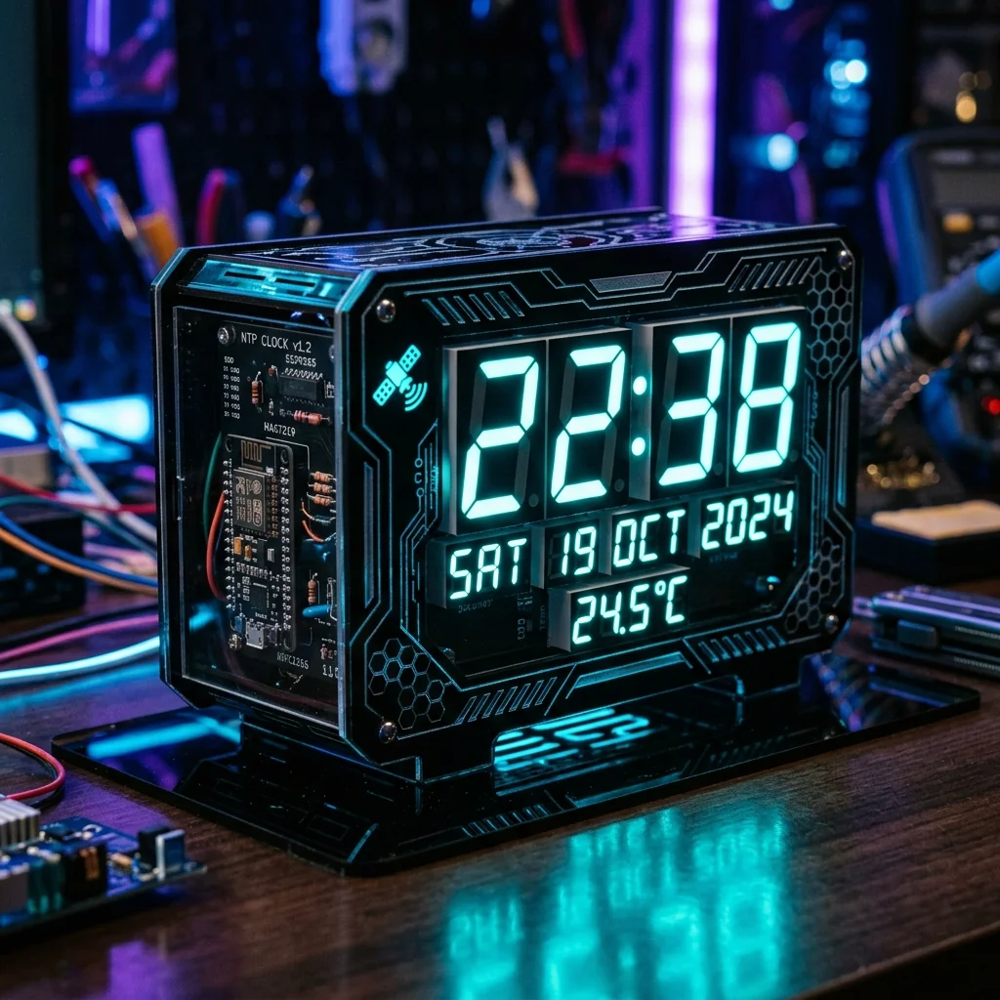
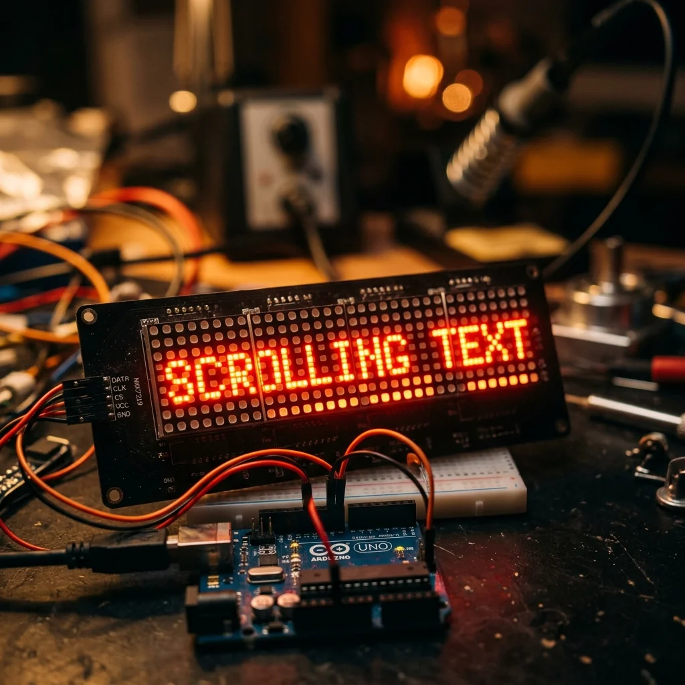

NTP Smart Clock

Project Overview
The NTP Smart Clock is an internet-connected digital timepiece built with an ESP8266 NodeMCU and four cascaded MAX7219 8×8 LED matrix modules. It synchronises with NTP time servers every hour to maintain atomic-level accuracy and falls back to an onboard DS3231 RTC module during Wi-Fi outages. A DHT22 sensor alternates between displaying the current time and ambient temperature every 10 seconds. A web page served from the ESP8266 allows configuring the timezone offset without reflashing firmware.
Key Features & Implementation
- Dual Timekeeping: NTP sync sets the DS3231 RTC every hour. If Wi-Fi is unavailable, the DS3231's ±2ppm TCXO oscillator keeps drift under 1 second per day — ensuring the clock never loses time even during 24-hour network outages.
- Scrolling Display Animations: The four cascaded MAX7219 matrices form a 32×8 pixel canvas. Custom bitmap fonts render large, readable digits while a smooth scrolling algorithm cycles through time, date, and temperature — all driven by SPI at 10MHz for flicker-free updates.
- Web Configuration Portal: The ESP8266 serves a captive portal on first boot for Wi-Fi setup. After connection, a configuration page allows setting timezone offset (UTC-12 to UTC+14), display brightness (0–15), and scroll speed — all saved to EEPROM so settings persist across reboots.
Challenges Solved
The cascaded MAX7219 matrices showed ghost pixels on certain digit transitions due to SPI timing mismatches at high clock speeds. Reducing the SPI clock from 10MHz to 4MHz and adding a 10ns setup time delay in the chip-select sequence eliminated all ghosting artefacts while maintaining visually imperceptible update latency.
Explore Related Projects
Discover more of our robotics and IoT projects.

LED Matrix Display
Arduino-driven 8×8 LED matrix cascaded for scrolling text and animated graphics with MAX7219 drivers.

Weather Station
Raspberry Pi-powered local weather station with real-time temperature, humidity, and pressure monitoring.